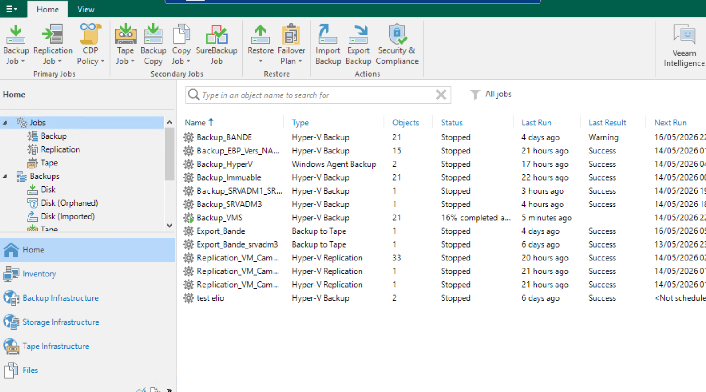

La continuité de service est une priorité pour le service informatique de l'E2SE. Je suis en charge de la routine de sauvegarde des données critiques (serveurs, fichiers, configurations) sur bandes magnétiques LTO, supervisée via la console Veeam Backup & Replication. Ce processus garantit la capacité à restaurer les données en cas de sinistre (PCA/PRA).
